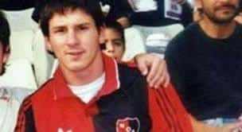
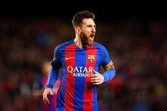

Carrera
Debut

Messi jugó en las inferiores de Newell's entre 1994 y 1999. Integraba la categoría 1987, conocida como "La Máquina '87", dirigida por Ernesto Vecchio Debutó ante Pablo VI el 9 de abril, en un encuentro que Newell's ganó 6-0 con cuatro tantos suyos.
F.C Barcelona

En 2001, Messi comenzó a entrenar con el Infantil A de Rodolfo Borrell, pero luego lo pasaron al Infantil B, dirigido por Xavi Llorens, donde jugaba como mediapunta o extremo izquierdo. Al ser extranjero, no podía participar en partidos oficiales, pero sí en amistosos.
Selleccion Nacional
En 2002, Jorge Messi le hizo llegar a Hugo Tocalli, responsable de las divisiones juveniles de Argentina, un video compilatorio de las jugadas de su hijo. A pesar de reconocer las cualidades del adolescente, el entrenador le respondió que no podía incorporarlo al plantel, porque ya tenía definido el equipo para el Mundial del año siguiente en Finlandia, pero que lo tendría en cuenta para otra competición. En 2003, sin embargo, y aunque sabía que la Federación Española de Fútbol quería ficharlo para su selección sub-17, tampoco lo convocó para el Mundial Sub-20 en Emiratos Árabes. El 30 de marzo de 2004, se reunió con el presidente de la AFA Julio Grondona y, por sugerencia de José Pékerman (quien había visto a Messi contra el Alcorcón), le propuso organizar un encuentro amistoso para impedir toda posibilidad de que jugara para España. En abril, finalmente, Messi recibió una citación por fax para un entrenamiento en junio en el predio de Ezeiza. El jugador ya había declinado, alrededor de 2003, reiteradas ofertas de jugar para España, porque quería representar a su país.
El 29 de junio de 2004, casi desconocido en Argentina, debutó en el estadio Diego Armando Maradona de Buenos Aires, en la categoría sub-20, en un partido amistoso con una sub-22 de Paraguay armada para la ocasión que arbitró Gabriel Brazenas. Ingresó en el segundo tiempo por Ezequiel Lavezzi e hizo un gol y dos asistencias, en un encuentro que finalizó 8-0 a favor de Argentina. El 3 de julio, contra Uruguay en el estadio Suppicci de Colonia, hizo un doblete en otro amistoso que Argentina ganó 4-1. Con solo estos dos partidos jugados, a fines de diciembre Tocalli lo convocó para el Sudamericano Sub-20 de principios del año siguiente, aunque, por decisión conjunta con Pékerman, jugaría siempre como suplente.